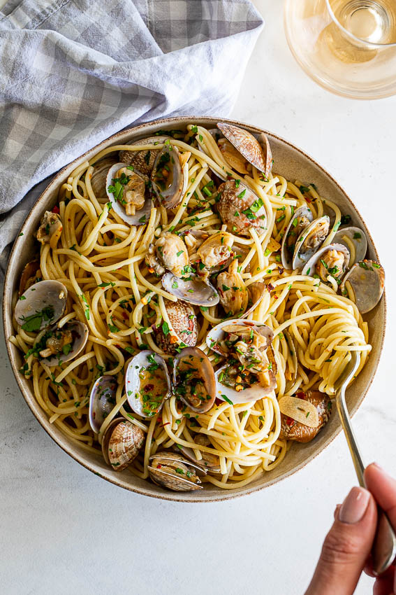

Spaghetti Vongole

Description
This is one of my favorite recipes
Ingredients
- 500g Spaghetti
- 1kg fresh mussels
- 1x glass of dry white wine
- 5x Cloves garlic
- 1x red chili
- 1x bunch of fresh parsley
- 50g of unsalted butter
- Olive oil
Steps
- Clean the fresh mussels and sort out dead ones.
- Bring water to a boil in a large pot. Add salt
- Cut chile, garlic and parsley
-
Heat up olive oil in a large pot and add chile and garlic. Don't let the
garlic burn!
-
And the mussels and the glass of white wine. Cover the pot with a lid
and let it cook on medium flame, until all the mussels are open plus an
additional 5 minutes.
- start cooking the pasta
- Add the parsley and the butter to the mussels
- Strain the Spaghetti and serve them with the mussels
- Enjoy!